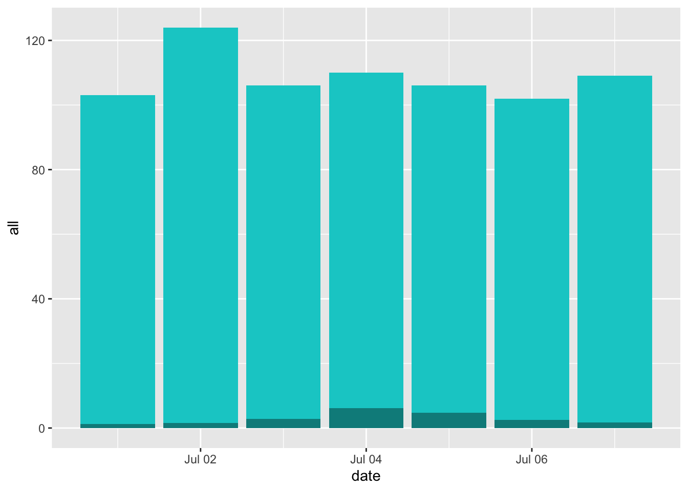
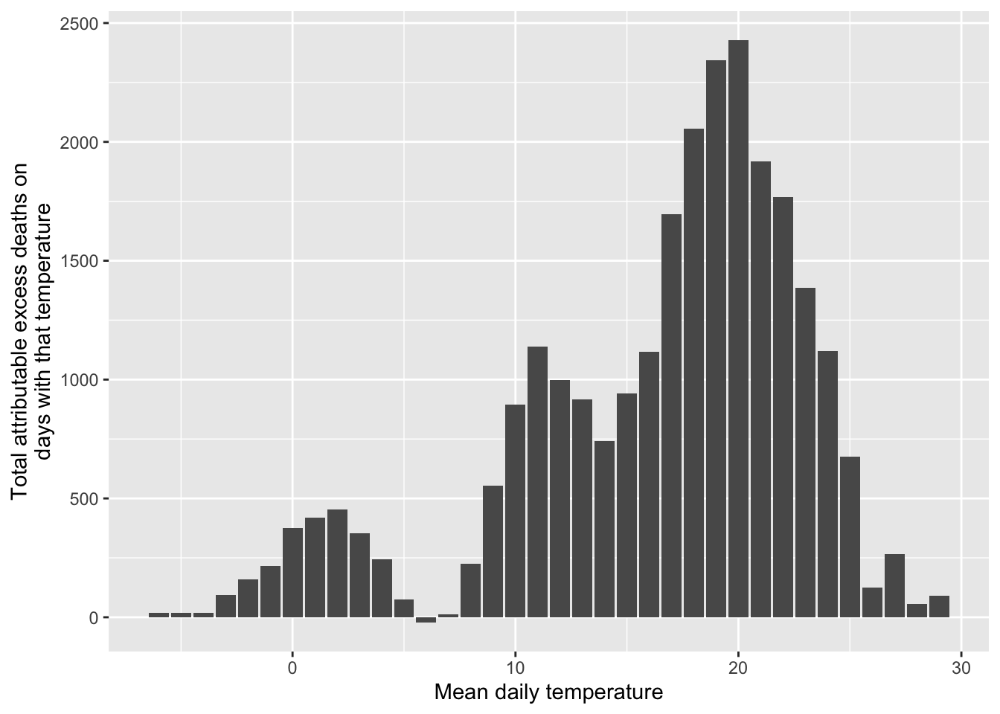
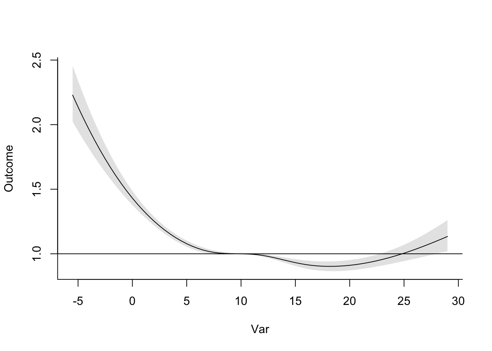

Chapter 6 Estimating health impacts
6.1 Readings
The readings for this chapter are:
- Balbus et al. (2016) Overview on climate change and human health, including a section on quantifying health impacts. The first chapter in a report on climate change and human health by the US Global Change Research Program.
- Steenland and Armstrong (2006) (Just the section on attributable fraction) Overview on estimating burden of disease through measures like attributable risk and attributable number (Note: The equation for \(AF_{pop}\) in this paper in equation 3 aligns with the equations for attributable risk described in this chapter)
- Gasparrini and Leone (2014) Calculating attributable risk from distributed lag non-linear models. Example code is included for this paper.
- Vicedo-Cabrera, Sera, and Gasparrini (2019) Provides a tutorial of all the steps for a projecting of health impacts of temperature extremes under climate change.
The following are supplemental readings (i.e., not required, but may be of interest) associated with the material in this chapter:
- Kinney et al. (2008) A review of challenges and approaches for projecting heat-related deaths under climate change
- Benichou (2006) Encyclopedia entry on attributable risk
- Northridge (1995) Brief summary of attributable risk with examples from epidemiology
- Greenland and Robins (1988) Definition and interpretation of attributable fractions
6.2 Attributable risk and attributable number
So far, we have focused on estimating the relative risk of exposure on a health outcome. In some cases—where we can assume a linear relationship between the exposure and the log counts of the outcome—we were able to get a single measure of the relative risk per unit change of the exposure. In this case, the single measure of relative risk applies to a one-unit change anywhere along the range of exposure observed for the population. One common example is the association between outdoor particulate matter concentration and mortality, which is typically modeled using a linear association, resulting in a single estimate of relative risk per unit increase in the exposure (as a note, this “unit” can be any constant change in the exposure—often it will be selected to reflect a realistically important change in the exposure, for example, an increase of \(10 \mu g/m^3\) for \(PM_{2.5}\)).
We have also looked at some more complex cases, where we’ve used a non-linear function of the exposure to model associated risk of the health outcome. In these cases, it becomes a bit more complicated to interpret the results. First, you need to identify a “baseline” of exposure to use as a comparison for measurements of relative risk. While for a linear association, you can measure a relative risk per unit change, regardless of where the change happens along the range of exposure, for a non-linear association, you must pick specific points to compare, and a unit change in exposure will vary across the range of exposure. For example, when looking at temperature and mortality in London, we compared risk at specific high and low temperatures to a baseline at a mild, “safe” temperature, one where mortality risk was observed to be at its lowest. In other words, we selected a baseline level of exposure to use as a reference and then compared relative risk at “slices” of the non-linear exposure-response function to get summaries of the observed relative risk. As we moved to cross-basis functions, we similarly took “slices” to look at risk at specific lags or specific temperatures.
These techniques point towards a general theme—when we are studying how an environmental exposure is associated with risk of a health outcome, we need to not only fit an appropriate statistical model to describe the association, but we also need to extract some summaries from that model that we can use to communicate what we’ve found. Not only is this important for communicating our findings, it’s also critical for making sure our findings can be used to improve public health.
So far, we have focused on summarizing and communicating our results based on estimates of relative risk. These estimates are a common summary in published environmental epidemiology studies, and they’re helpful in identifying how levels of an exposure translate to increased health risk. However, they fail to incorporate one facet that is very important when trying to translate findings to public health impacts—they do not incorporate how common or rare exposures of different levels are in real life. For example, say you fit a model that shows an exposure-response function for temperature and mortality that is very flat everywhere except at very high temperatures. If those very high temperatures occur often (say, 20 days a year on average), then temperature would cause many more excess deaths in the community compared to if those temperatures are very rare (say, 1 day every five years on average). In other words, to interpret the public health impact of an exposure, you need to consider not only how health risk changes with the level of the exposure, but also how frequently different levels of exposure occur.
One epidemiological measure that incorporates these two facets is the measure of attributable risk. Attributable risk aims to measure the proportion of cases of disease in a population that is attributable to an exposure—in other words, what proportion of cases would you have avoided in a population if the exposure were eliminated (or, in cases where that doesn’t make sense like temperature, held at its safest level)? A number of other terms are sometimes also used to describe this idea, including population attributable risk, attributable fraction. Etiological or etiologic fraction also appears in the literature as an equivalent or interchangeable term to attributable fraction, but as Greenland and Robins point out (Greenland and Robins 1988) the interpretation of each is more nuanced, and the two are not necessarily the same quantity.
In the simple case of a binary exposure (in other words, everyone in the study population can either be exposed or unexposed, but there aren’t different levels of exposure), the attributable risk (\(AR\)) can be expressed mathematically as:
\[ AR = \frac{Pr(D) - Pr(D|\bar{E})}{Pr(D)} \] where \(Pr(D)\) is the probability of the disease in the population and \(Pr(D|\bar{E})\) is the probability of the disease if the whole population were unexposed. This can be expressed in terms of the probability of exposure and the relative risk of exposure on the outcome (Benichou 2006; Northridge 1995):
\[ AR = \frac{Pr(E) * (RR-1)}{[Pr(E) * (RR-1)] + 1} \] where \(Pr(E)\) is the probability of exposure in the population (again, this is for a binary exposure) and \(RR\) is the relative risk of the outcome associated with exposure.
Another similar measure is also helpful in estimating the impact of the exposure—the attributable number. The attributable number gives an estimate of the absolute number of cases that would have been avoided had the entire population been unexposed. It essentially takes the attributable risk and multiplies it by the prevalence of the outcome in the population, to move from a proportion of cases that are attributable to the exposure to the number of cases that are attributable (\(AN\)) (Benichou 2006; Northridge 1995):
\[ AN = AR * n \] where \(n\) is the total number of cases in the population.
This measure is often helpful in communicating total impacts to people who are not epidemiologists. For example, this measurement can be used to determine the number of excess deaths that were likely caused by a disaster, helping to conceptualize it’s impact on a population. These estimates can also be extended to help calculate economic costs related to health impacts. For example, an estimate of excess hospitalizations related to an exposure can be multiplied by the average cost of hospitalization in that population for the outcome to generate a back-of-the-envelope estimate of the costs to an insurer related to that exposure.
It becomes a bit more complex to estimate the attributable risk when the exposure is continuous rather than binary, but the process is conceptually similar. First, you need to determine a baseline level of exposure. This will serve in creating a counterfactual—in the attributable risk, you will be comparing to an alternative scenario where the exposure is always at this level. There are a few ways you can pick this baseline. If the level of the exposure can really (and reasonably) take a value of 0, then you can use that for the comparison. For example, if you are studying smoking and health, it would be reasonable to set non-smoking as the baseline. For other exposures, there may always be some background level of the exposure—a level that couldn’t be eliminated regardless of policy choices or other actions—and in that case it may make sense to set the baseline to this background level of exposure. Finally, there are some cases where the “safest” level comes within the range of exposure, rather than at a minimum or maximum value. Temperature is an example of this, where the lowest risk of many health outcomes occurs at a mild temperature in the middle of the temperature range. In this case, the baseline is often set at this “safest” level of exposure. For temperature and mortality, this point is called the minimum mortality temperature. Any of these choices can be fine, but since there are choices, it’s important that you clearly describe your baseline when estimating attributable risk, and justify why it’s a helpful baseline in interpreting health impacts of the exposure.
Second, you need to compare each observed exposure in the population to this baseline level. For each observation, you’ll estimate the relative risk at that observed exposure compared to the baseline. You can then get an observation-level estimate of attributable fraction for each exposure of an exposure, which can be used to estimate a component of attributable number for each exposure, and sum these contributions to get an estimate for the population as a whole, incorporating the range of exposures among that population. Mathematically, the steps for this are to look at each observation in the population (i.e., each “exposure”, which in a daily time series would be each date) and calculate the attributable fraction (\(AF_{x_i}\)) for that “exposure” (\(x_i\)) (adapted from Gasparrini and Leone (2014)). You can calculate the attributable fraction for each observed exposure as:
\[ AF_{x_i} = \frac{(RR_{x_i} - 1)}{RR_{x_i}} \]
We often estimate \(RR_{x_i}\) using regression, as the exponent of an estimated regression coefficient \(\beta_{x_i}\). We can rearrange the equation to express it based on \(\beta_{x_i}\), instead:
\[ AF_{x_i} = \frac{exp(\beta_{x_i}) - 1}{exp(\beta_{x_i})} \\ = \frac{exp(\beta_{x_i})}{exp(\beta_{x_i})} - \frac{1}{exp(\beta_{x_i})} \\ = 1 - \frac{1}{exp(\beta_{x_i})} \\ = 1 - exp(-\beta_{x_i}) \]
If you have categories of exposure, you may have calculated \(\beta_{x_i}\) for each of those categories compared to a baseline. If you have fit a non-linear association, you can get the \(\beta_{x_i}\) for each of the many exposure levels (e.g., each temperature) by “slicing” the exposure-response function at that level in comparison to a baseline. In practice, we can calculate this for each day in a time series by “slicing” to get the estimate of \(\beta_{x_i}\) for that day’s temperature.
By multiplying this by the total number of cases observed at exposure level (\(n_{x_i}\)), you can estimate the attributable number for that specific exposure (\(AN_{x_i}\)) (adapted from Gasparrini and Leone (2014)):
\[ AN_{x_i} = n_{x_i} * AF_{x_i} \]
In practice, for a time series study, you could do this by taking your estimate of \(AF_{x_i}\) for each day in the study and then multiplying it by the number of cases (e.g., deaths) observed on that study day.
You can then sum all the observation-level attributable number estimates to get the total attributable number in the population (for a time series, this will be over the study period) (adapted from Gasparrini and Leone (2014)):
\[ AN = \sum_{i=1}^{n}{AN_{x_i}} \]
From this attributable number, you can estimate an attributable fraction by dividing by the total number of cases in the population (adapted from Gasparrini and Leone (2014)):
\[ AR = \frac{AN}{\sum_{i=1}^{n}{n_i}} \]
where \(n_i\) is the number of cases observed at exposure \(i\).
Applied: Calculating attributable risk and attributable number from time series data
For this exercise, you will be using data and a model (dlnm_mod_1) that you fit in Chapter 4. To fit that model, you also created a crossbasis called temp_basis, and you’ll need that object as well. The example code for this exercise copies the code to read in the data and create that model and crossbasis.
- Start with the model you fit as
dlnm_mod_1in Chapter 4, as well as theobsdataset you used to fit it. Using 7 degrees C as the baseline exposure, determine the number of deaths and the fraction of deaths attributable to heat in the first week of July in 2012 in London. - Extend this idea to calculate the attributable risk and attributable number of deaths related to temperature throughout the study period. Calculate these values separately for heat and cold.
- Do the same calculation as in the previous part, but change the underlying model that you’re using. In this case, use the
dist_lag_mod_5you fit in Chapter 4. What differences are there in attributable risk and attributable number when you use a model that incorporates lagged effects (dist_lag_mod_5) compared to one that only fits the immediate association (dlnm_mod_1)?
Applied exercise: Example code
Here is the code to read in the data and create that model and crossbasis you will need in this exercise:
# Load some packages that will likely be useful
library(tidyverse)
library(viridis)
library(lubridate)
library(broom)
# Load and clean the data
obs <- read_csv("data/lndn_obs.csv") %>%
mutate(dow = wday(date, label = TRUE)) %>%
mutate(time = as.numeric(date) - first(as.numeric(date)))
library(dlnm)
library(splines)
temp_basis <- crossbasis(obs$tmean, lag = 0,
argvar = list(fun = "ns", df = 4),
arglag = list(fun = "integer"))
dlnm_mod_1 <- glm(all ~ temp_basis + factor(dow, ordered = FALSE) +
ns(time, df = 158),
data = obs, family = "quasipoisson")- Start with the model you fit as
dlnm_mod_1in Chapter 4, as well as theobsdataset you used to fit it. Using 7 degrees C as the baseline exposure, determine the fraction of deaths attributable to heat in the first week of July in 2012 in London.
Let’s start by pulling out the observations for the first week in July of 2012 (note that you can use interval and %within% from lubridate to help pull observations with a date within a certain range):
library(lubridate)
july_week <- obs %>%
filter(date %within% interval(ymd("2012-07-01"), ymd("2012-07-07"))) %>%
select(date, all, tmean)
july_week## # A tibble: 7 × 3
## date all tmean
## <date> <dbl> <dbl>
## 1 2012-07-01 103 14.6
## 2 2012-07-02 124 15.2
## 3 2012-07-03 106 17.3
## 4 2012-07-04 110 19.2
## 5 2012-07-05 106 18.5
## 6 2012-07-06 102 17.0
## 7 2012-07-07 109 16.0In this data, we’ve pulled out the variables we’ll need in calculating attributable risk and attributable fraction—we have the daily value of the exposure, mean temperature (tmean), and the daily number of cases, the count of daily deaths (all).
First, let’s calculate the attributable fraction. To do this, we need to use
the model that we fit earlier to determine what the log relative risk is for each day’s temperature. You can use the crosspred function to determine the log relative risk at any temperature compared to a baseline temperature that you specify. In the crosspred call, you’ll use the cen parameter to say which temperature you want to use as your baseline and the at parameter to say which temperatures you want to predict to—in this case, we want to predict to the temperatures for the first week in July of 2012 (july_week$tmean).
The crosspred object includes a lot of output; the matfit part gives the central estimates of log relative risk at each temperature:
## lag0
## 14.6077699661255 0.01199433
## 15.190845489502 0.01275503
## 16.0049057006836 0.01599277
## 17.0358219146729 0.02461931
## 17.2731075286865 0.02731069
## 18.4983215332031 0.04512788
## 19.1906547546387 0.05791965With some code, you can extract this and join it with the july_2012 dataframe:
july_week <- crosspred(basis = temp_basis, model = dlnm_mod_1,
cen = 7, at = july_week$tmean) %>%
pluck("matfit") %>%
as.data.frame() %>%
rownames_to_column(var = "tmean") %>%
rename("beta_x" = lag0) %>%
mutate(tmean = as.numeric(tmean)) %>%
inner_join(july_week, ., by = "tmean")
july_week## # A tibble: 7 × 4
## date all tmean beta_x
## <date> <dbl> <dbl> <dbl>
## 1 2012-07-01 103 14.6 0.0120
## 2 2012-07-02 124 15.2 0.0128
## 3 2012-07-03 106 17.3 0.0273
## 4 2012-07-04 110 19.2 0.0579
## 5 2012-07-05 106 18.5 0.0451
## 6 2012-07-06 102 17.0 0.0246
## 7 2012-07-07 109 16.0 0.0160From this, you can calculate attributable risk on each day as \(AR = 1 - exp(-\beta_x)\) and then calculate attributable number as \(AN = AR * n\):
july_week <- july_week %>%
mutate(attr_frac = 1 - exp(-beta_x),
attr_num = all * attr_frac)
july_week## # A tibble: 7 × 6
## date all tmean beta_x attr_frac attr_num
## <date> <dbl> <dbl> <dbl> <dbl> <dbl>
## 1 2012-07-01 103 14.6 0.0120 0.0119 1.23
## 2 2012-07-02 124 15.2 0.0128 0.0127 1.57
## 3 2012-07-03 106 17.3 0.0273 0.0269 2.86
## 4 2012-07-04 110 19.2 0.0579 0.0563 6.19
## 5 2012-07-05 106 18.5 0.0451 0.0441 4.68
## 6 2012-07-06 102 17.0 0.0246 0.0243 2.48
## 7 2012-07-07 109 16.0 0.0160 0.0159 1.73Over this week, the fraction of deaths attributable to heat on any day (compared to a baseline of 7 degrees C) ranged from about 1.2% of all deaths to about 5.6% of all deaths. Across these days, between 1.2 and 6.2 deaths on a given day were attributable to heat.
We can get the total number of deaths attributable to heat, as well as the total attributable fraction over the time period, by summing up across the week for the attributable number and then dividing this by the total number of cases in the week to get the attributable fraction:
## # A tibble: 1 × 2
## tot_attr_num tot_attr_frac
## <dbl> <dbl>
## 1 20.7 0.0273This tells us that there were about 21 deaths attributable to heat in London that week (i.e., deaths that would not have occurred if the temperature was instead 7 degrees C each day in the week), and that this makes up about 3% of all the deaths in London that week.
You can plot day-by-day estimates of the total deaths, highlighting the number that are attributable to temperature, during this period:
july_week %>%
ggplot(aes(x = date)) +
geom_col(aes(y = all), fill = "cyan3") +
geom_col(aes(y = attr_num), fill = "cyan4")
With this example, you can see how you can calculate these estimates from scratch. However, this will become cumbersome as you move to larger and more complex examples. Fortunately, the authors of Gasparrini and Leone (2014) included an R script with code for a function to do this, both for these simpler examples and as you move to more complex examples. To download the script for this function, go here and save the file as a plain text file, with the extension “.R”. (As a note, make sure you use this link for the file—an earlier version of the script was posted on the website of the article, but it’s changed some since then, and you want the newer version.) Once you unzip this file, it should be an R script named “attrdl.R”. Put this script somewhere convenient to your working directory and source the code in it using the source function. For example, if you saved the R script in a subdirectory “code” of the current working directory, you would run:
This will run all the code in the file, which creates a new function called attrdl. This function also has a helpfile, which you can find here.
The attrdl function has four required arguments: a vector with the exposure, a crossbasis function, a vector with the cases that correspond to each value in the exposure vector, and the value of the exposure that you want to use as a baseline. You can also include a fitted model. In our example, the exposure will be a vector of the temperature on each day of the first week of July 2012 in London, and the cases vector will be the number of deaths observed on each of those days. We will use 7 degrees C as our baseline. The crossbasis will be the crossbasis object we used to fit our model, and we’ll include the fitted model. We can run the function as:
## [1] 0.02727977By default, it gives us the attributable risk for the week. You can see that this matches the value we got when we did this calculation from scratch, but it certainly saves us a lot of time. This function will also help us tackle tougher cases, like when we have model associations across a distributed lag.
You can also use this function to get the attributable number. You just need to add the argument type = "an":
attrdl(x = july_week$tmean, cases = july_week$all,
basis = temp_basis, model = dlnm_mod_1, cen = 7, type = "an")## [1] 20.73262If we want to get the values for each day of the week, we can include the argument tot = FALSE. This will give us an estimate for each date, rather than the estimate of the total over the period:
attrdl(x = july_week$tmean, cases = july_week$all,
basis = temp_basis, model = dlnm_mod_1, cen = 7,
type = "an", tot = FALSE)## [1] 1.228037 1.571579 2.855759 6.190165 4.677225 2.480511 1.729346Again, you can see that this agrees with the calculations we did from scratch.
- Extend this idea to calculate the attributable risk and attributable number of deaths related to temperature throughout the study period. Calculate these values separately for heat and cold.
With the attrdl function, it’s very straightforward to extend these calculations to look at the whole study period, rather than just one week. The only tricky part, conceptually, is that we want to generate separate estimates for heat and cold. Heat-attributable mortality will only occur when the temperature is higher than our baseline of 7 degrees Celsius, while cold-attributable mortality will only occur when the temperature is lower than 7 degrees Celsius.
One way we can do this is to split apart the original dataset into two datasets—one with all the observations on “cold” days (those below 7 degrees C) and one with all the observations on “hot” days (those above 8 degrees C). Then we can run the function to calculate attributable risk and attributable number on these two datasets separately, to get separate estimates for heat-attributable and cold attributable mortality.
obs_cold <- obs %>%
filter(tmean < 7)
obs_hot <- obs %>%
filter(tmean > 7)
# Estimate cold-related attributable risk over the study period
attrdl(x = obs_cold$tmean, cases = obs_cold$all,
basis = temp_basis, model = dlnm_mod_1,
cen = 7)## [1] 0.007327224# Estimate cold-related attributable number over the study period
attrdl(x = obs_cold$tmean, cases = obs_cold$all,
basis = temp_basis, model = dlnm_mod_1,
cen = 7, type = "an")## [1] 2414.899# Estimate heat-related attributable risk over the study period
attrdl(x = obs_hot$tmean, cases = obs_hot$all,
basis = temp_basis, model = dlnm_mod_1,
cen = 7)## [1] 0.0235678# Estimate cold-related attributable number over the study period
attrdl(x = obs_hot$tmean, cases = obs_hot$all,
basis = temp_basis, model = dlnm_mod_1,
cen = 7, type = "an")## [1] 23484.98Another way that you can do this is to use the range argument in attrdl, which allows you to focus on the impacts in only one range of the exposure. For example, you could estimate the heat-related attributable number by using a range from the baseline temperature to the maximum temperature in the observations:
attrdl(x = obs$tmean, cases = obs$all,
basis = temp_basis, model = dlnm_mod_1,
cen = 7, range = c(7, max(obs$tmean)), type = "an")## [1] 23484.98Based on these estimates, there were about 23,500 deaths over the approximately two-decade study period in London that we would expect to not have occurred if the temperature never exceeded 7 degrees C. This makes up about 2% of all mortality on days above 7 degrees C. On the other hand, based on this assessment, the impact from cold is much lower—only about 2,500 attributable deaths over the approximately two-decade study period, making only about 0.7% of all the deaths on days colder than 7 degrees C.
There are a few caveats with these estimates. First, there are a lot fewer days that were below 7 degrees C in the study than that were above. This accounts for some of the difference in the total number of excess deaths attributable to heat versus cold over the study period. The location of the minimum mortality temperature, which we estimated from fitting a model with only immediate effects in this case, might shift as we include more lags, in which case we would recenter our estimates of attributable risk and attributable number in terms of the baseline temperature we compare to. This could change the numbers some just from having more days above or below the threshold.
Second, we know from fitting the distributed lag non-linear models in an earlier chapter that cold tends to have a more lagged effect on mortality risk, while the effect of heat is more immediate. By limiting the model to lag 0, we’ve likely missed a lot of the effect of cold on mortality risk. We’ll address this in the next part of the exercise, where we’ll expand to use a model with a distributed lag.
Finally, the choice of a baseline is tricky here. We’re using the minimum mortality temperature, and that’s a common choice. However, it’s pretty unrealistic to think that there would be a way that this “safest” baseline scenario would ever be met—you’d never be able to enforce the temperature in a city staying constant year-round. Another approach could be to take a sample “mild” summer and “mild” winter for your study city, and compare the health impacts during more severe years to that milder case. This would require a bit more work to calculate, as your baseline temperature would be changing throughout each season. There’s not a perfect solution to this issue of identifying a baseline, but it’s important to be clear when you communicate the baseline you’re using when you describe your results.
Going back to the attrdl function, you can use the tot = FALSE argument to check out some interesting patterns in attributable numbers over your study. This argument estimates the attributable risk or number for each separate day in the study. For example, you can use it to add a column to your original data with the estimated attributable number for that day:
obs_an_added <- obs %>%
select(date, tmean, all) %>%
mutate(an = attrdl(x = obs$tmean, cases = obs$all,
basis = temp_basis, model = dlnm_mod_1,
cen = 7, type = "an", tot = FALSE))
obs_an_added## # A tibble: 8,279 × 4
## date tmean all an
## <date> <dbl> <dbl> <dbl>
## 1 1990-01-01 3.91 220 1.09
## 2 1990-01-02 5.55 257 0.0294
## 3 1990-01-03 4.39 245 0.756
## 4 1990-01-04 5.43 226 0.0685
## 5 1990-01-05 6.87 236 -0.0395
## 6 1990-01-06 9.23 235 1.74
## 7 1990-01-07 6.69 231 -0.0780
## 8 1990-01-08 7.96 235 0.546
## 9 1990-01-09 7.27 250 0.114
## 10 1990-01-10 9.51 214 1.84
## # ℹ 8,269 more rowsWith this, we can look at how the number of excess deaths vary by temperature. We can bin temperatures into broad bins and then plot the total number of attributable deaths for days with each temperature:
obs_an_added %>%
mutate(temp_round = round(tmean)) %>%
group_by(temp_round) %>%
summarize(an_tot = sum(an)) %>%
ggplot(aes(x = temp_round, y = an_tot)) +
geom_col() +
labs(x = "Mean daily temperature",
y = "Total attributable excess deaths on\ndays with that temperature")
Remember that our exposure-response function increased dramatically at extreme temperatures, especially extreme heat. Here, however, we see the role that frequency of exposure plays in the ultimate impact. Because extremely hot and extremely cold days are very rare, they don’t account for much of the heat- or cold-attributable mortality. Instead, a lot more comes at temperatures that are a bit milder than those extremes but that occur much more often. This, of course, might change depending on the baseline we’re using for comparison.
- Do the same calculation as in the previous part, but change the underlying model that you’re using. In this case, use the
dist_lag_mod_5you fit in Chapter 4. What differences are there in attributable risk and attributable number when you use a model that incorporates lagged effects (dist_lag_mod_5) compared to one that only fits the immediate association (dlnm_mod_1)?
To start, re-run the code we used in Chapter 4 to fit dist_lag_mod_5, including the code to create the associated crossbasis function (dl_basis_4):
dl_basis_4 <- crossbasis(obs$tmean, lag = 30,
argvar = list(fun = "ns", df = 4),
arglag = list(fun = "ns", df = 6))
dist_lag_mod_5 <- glm(all ~ dl_basis_4 +
factor(dow, ordered = FALSE) +
ns(time, df = 158),
data = obs, family = "quasipoisson")First, let’s take a look to see if we should use a different baseline—in other words, is 7 degrees C still our best estimate of the minimum mortality temperature, now that we’re incorporating lagged effects? If we use crosspred, we can check the exposure-response curve for the cumulative effects over all the fitted lags, to see what the minimum point is on that curve:

Now that we’re considering lagged effects, the temperature with minimum mortality risk has gone up quite a lot, to 18 degrees C. We’ll use that as our baseline in estimating attributable risk and number for heat and cold. We can already tell that this will increase our cold-attributable mortality by a bit most likely, since there will be a lot more days that are below this baseline temperature now. Following the same reasoning, this is also likely to decrease the heat-attributable mortality (although of course changes to the shape of the exposure-response curve will also affect our estimates).
The other thing that we need to think about is how to incorporate lagged effects of temperature. You can do this by thinking of temperatures at different lags as different exposures. The mathematics for this gets more complicated, but fortunately the attrdl function can handle those mechanics for us.
We do, however, have to decide whether we want to calculate these attributable impacts from lagged exposures under what’s called a “backward perspective” or a “forward perspective”. One of the required readings for this week has a full discussion of these two perspectives and the implications and assumptions of each (Gasparrini and Leone 2014). Simply put, the forward perspective is describing how one day’s temperature has impacts on its same day as well as following days, while the backward perspective calculates the impact that all the exposures in the lagged period before a certain day impact risk on that day.
There is a way to calculate the separate impacts of heat and cold under either of these perspectives, but the forward perspective can be prone to some bias (Gasparrini and Leone 2014), so we’ll use the backward perspective. Since we want to get estimates for heat and cold separately, we’ll use the range argument in the attrdl function. (With the lagged effects, it would be tricky to try to do this by separating the dataset into hot and cold days, since you’ll have some cases when you have temperatures that are both below and above the baseline temperature in the lag period.) You can specify that you’d like to use the backward perspective with the argument dir = "back":
# Estimate cold-associated attributable risk
attrdl(x = obs$tmean, cases = obs$all,
basis = dl_basis_4, model = dist_lag_mod_5,
cen = 18, range = c(min(obs$tmean), 18), dir = "back")## [1] 0.09398662# Estimate cold-associated attributable number
attrdl(x = obs$tmean, cases = obs$all,
basis = dl_basis_4, model = dist_lag_mod_5,
cen = 18, range = c(min(obs$tmean), 18), dir = "back", type = "an")## [1] 124632.4# Estimate heat-associated attributable risk
attrdl(x = obs$tmean, cases = obs$all,
basis = dl_basis_4, model = dist_lag_mod_5,
cen = 18, range = c(18, max(obs$tmean)), dir = "back")## [1] 0.002380825# Estimate heat-associated attributable number
attrdl(x = obs$tmean, cases = obs$all,
basis = dl_basis_4, model = dist_lag_mod_5,
cen = 18, range = c(18, max(obs$tmean)), dir = "back", type = "an")## [1] 3157.129When we use this model that includes distributed lag effects of temperature, you can see that the impact of cold has increased substantially and the impact of heat has decreased substantially. This is because cold tends to have effects that are lagged after the initial exposure, while heat tends to be more immediate, and can even have somewhat of a pattern reflective of mortality displacement (although this depends on the study city). Once we incorporate the delayed effects of cold, the minimum mortality temperature also increase substantially, so many more days are below, rather than above, the baseline temperature we’re using for comparison as compared to the last part of the exercise.
These long lagged effects of temperature start to bring in some questions about whether the effect is specifically from the absolute value of the temperature, or whether they may be starting to pick up some impacts that are caused by seasonality, rather than absolute temperature. As you include lags up to a month or longer, it gets harder to separate the impact of temperature specifically from the impact of season. This question is very important when you start thinking about the impacts of climate change. With climate change, we expect in many places that winter days will, on average, have a higher temperature. If the mortality risk of cold is caused by the absolute temperature, this would result in fewer cold-related deaths. However, if there are other seasonal factors (that we don’t expect to change, or at least not as much), then the rising winter temperatures would have less of a beneficial effect on winter mortality risk. There are a number of interesting papers that focus on this question and its implications for climate change projections (Kinney et al. 2015; Ebi 2015; Hajat and Gasparrini 2016). Also, there are some papers that go more deeply into how to estimate minimum mortality temperatures (W. Lee et al. 2017; Tobıas, Armstrong, and Gasparrini 2017), as well as what baseline temperature makes a suitable threshold for estimating attributable risk for cold-related mortality (Arbuthnott et al. 2018).
6.3 Quantifying potential health impacts under different scenarios
You can use measures of attributable risk and attributable number to communicate the estimated impacts of the exposure in the population that you studied. However, you can also use this same idea to investigate the potential health impacts of an exposure under different scenarios. The basic framework on these calculations was to compare one scenario (a baseline of no, limited, or “safest” exposure) to another scenario (the observed levels of exposure in the population). It’s fairly straightforward to transfer this idea to broader applications—any case where you would like to compare one scenario of exposure to another scenario of exposure.
You could do this a few ways. One is that you could calculate attributable impacts under both scenarios in comparison to some baseline, and compare the final impact estimates. One of this week’s readings (Vicedo-Cabrera, Sera, and Gasparrini 2019) describes this process, adding a code tutorial in the supplement. It describes the process in the context of projecting the potential heat-related mortality impacts of climate change, compared to present-day impacts.
There are a few details that make this process a bit different from calculating attributable impacts based on the study data you used to fit the model. First, you do not have observations of exposure. Instead, you will use scenarios of exposure, generated under certain assumptions. For climate change projections, there are large climate modeling groups that have generated scenarios of future weather conditions under scenarios that are tied to assumptions about how drivers of climate change will change in the future. These scenarios can be used in place of exposure observations to project potential health impacts. Of course, there are more uncertainties that are introduced in this case, compared to observed exposures, since there is some uncertainty in those projections. Further, it is typically best to work with atmospheric scientists in deriving exposure scenarios from these projections, as you’ll need expertise to appropriately convert the climate model output to an appropriate representation of temperature exposures in a future period.
Second, you will not have the observed number of cases (for example, deaths) on each day of a hypothetical scenario. Instead, you will need to incorporate an estimate of mortality each day in the scenario. One approach is to use present-day average daily mortality counts, as this allows you to isolate the role of climate change, separate from changes in demographics. Further, if you are considering scenarios that happen in the near future, this is a very reasonable approach. However, if you’re considering scenarios a few decades in the future, this won’t give a good estimate of the impact we might actually expect. One approach to try to improve this estimate is to use demographic projections of population into the future. You can pair this with mortality rates in certain subsets of the population (these could be, for example, by age and race) to try to generate a more realistic estimate of future impacts.
Finally, when you use the estimate exposure-response functions that are estimated with present-day data to project impacts in a future period, there are a number of reasons that the exposure-response function might not provide as good of an estimate of how temperature would impact health. Exposure-response functions for temperature are not the same in every city. Instead, there’s clear evidence that, in cities with cooler climates, heat tends to start affecting risk at a lower temperature, and, in cities with hotter climates, cold tends to start affecting risk at a higher temperature. In other words, there’s not an “absolute” shape, tied to specific temperature values, that can universally describe how mortality risk changes with temperature. Further, there is evidence that these exposure-response functions have changed in the same city over time. This all suggests that there’s likely some influence from adaptation on these exposure-response functions. For example, a decreasing risk from heat over the 20th century likely was, at least in part, caused by adaptation through the invention and increased use of air conditioning, which reduces exposure to heat for at least some of the population at least some of the time. Other changes can come from changes in the population structure. For example, we know that temperature-related risk tends to be higher in older versus younger adults, so if a population is aging, that could change the shape of its overall exposure-response function, even without other changes. These questions are an area of continuing development for climate epidemiologists. Good discussions are available in a number of papers, including Kinney et al. (2008), Arbuthnott et al. (2016), Gosling et al. (2017), and Kinney (2018).